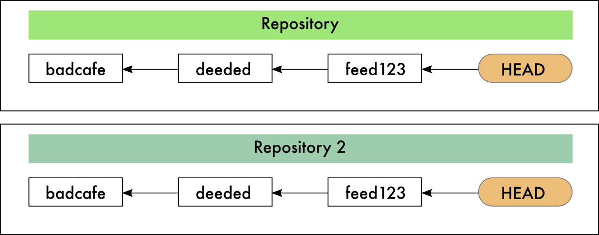
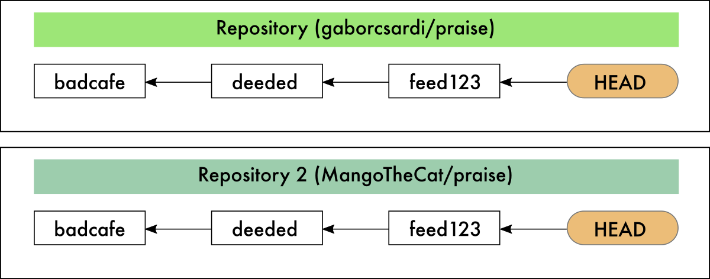
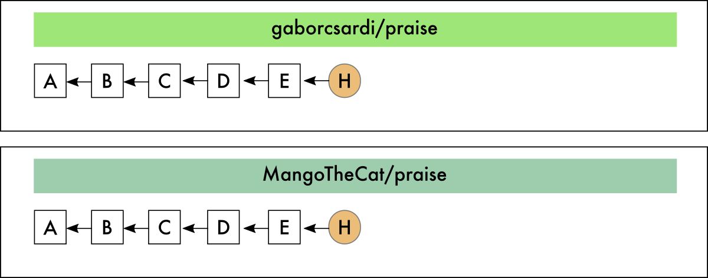
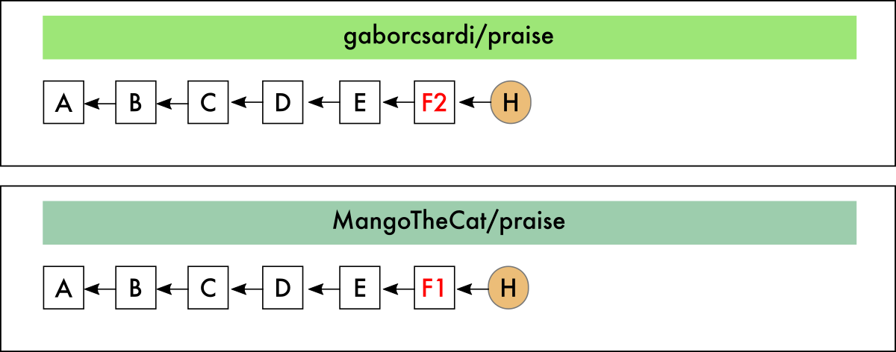
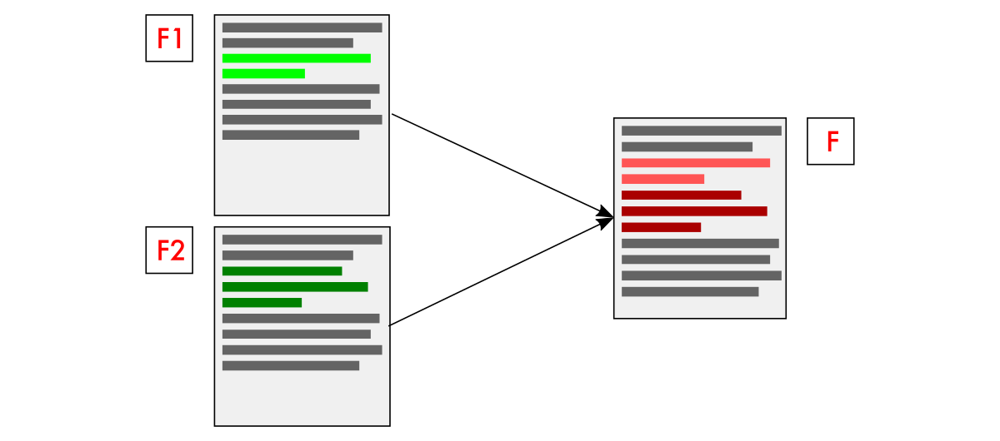
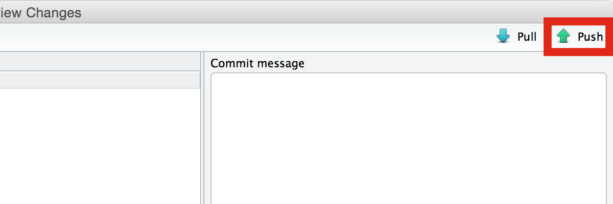
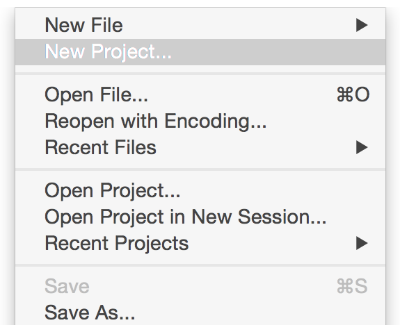
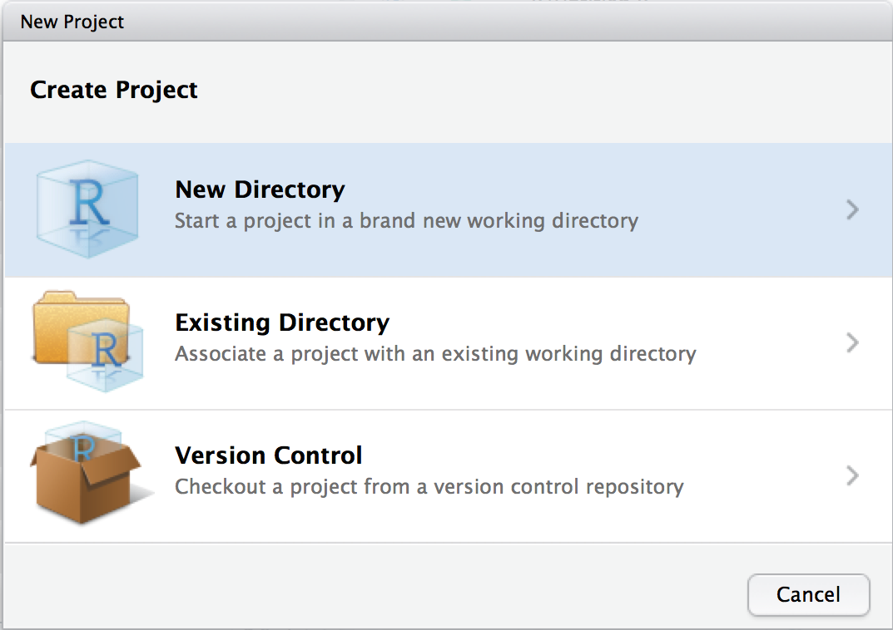
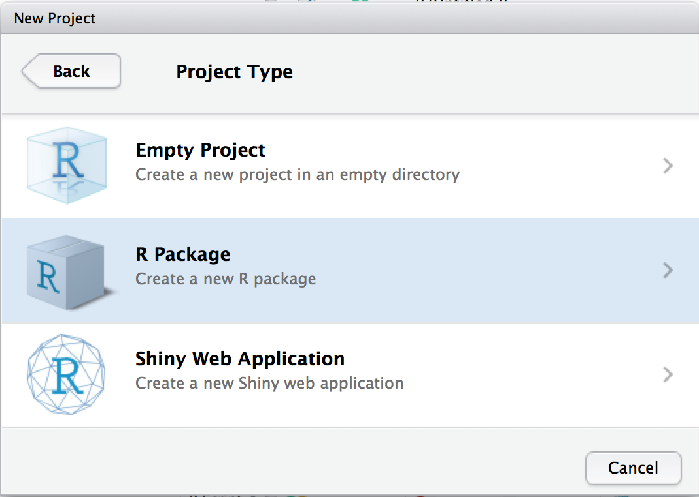

Version Control and git
Gábor Csárdi
Why version control?
- Records all changes.
- Easy to go back, and undo.
- Multiple version of the project, fast switching.
- Easy and disposable experimentation.
- Automatic merge.
- Conflicts are detected.
- See what has changed: diffs.
GitHub vs. git
GitHub
- Company
- Provides git hosting
- With a web interface (optional)
- By GitHub: Issue tracker, Pull requests, Wikis, Forks, Gists, github.com
git
- Distributed version control system
- Free and open source
- Not owned or developed by GitHub
- By git: Repositories, Branches, Remotes, Commits, Clones, Pushes, Merges, etc.
Commits are full snapshots
• Every commit is a full snapshot of the project
• Every commit has a 40 character long hexadecimal id
• Usually enough to use first ~7 characters
Commits are connected (parent commit)

• Every commit has one (or more!) parents
• Files that did not change just point their parent
• Files that changed have a brand new copy
• Files are hashed
• Each git repository is a content addressable database
Repository

• A repository has a network (DAG) of commits
• And a set of labels
• At least this is a good mental model
Clones

A clone is a complete copy of a repository
Forks (@ GitHub)

Fork is essentially the same as a clone
They live in different GitHub accounts
Pull requests and merges

Pull requests and merges

Pull requests and merges

Pull requests and merges

Clean merge

Merge conflicts

Need to be done manually, from the command line
Merge conflicts
First line is the same
Second line is the same
<<<<<<< F2
F2 added three lines here: one
This is F2 / two
This is F2 / three
=======
F1 added two lines here: one
This is F1 / two
>>>>>>> F1
And the other four lines are the same.
They did not change at all
Penultimate line
Last line, still unchanged.
Edit the file, clean it up, and then git add and git commit
After the merge

Note that this is not a symmetric operation
Command line git, Windows

Command line git, OS X and Linux

Navigation in the shell
Current working directory (WD)
pwd
Change working directory (down)
cd <directory>
Change working directory (up)
cd ..
List directories and files in the WD
ls
Command line git
All git commands start with git
git <command> <options>
Set the WD witin the project
cd <project-directory>
git <command> <options>
Clone a project from GitHub

git clone https://github.com/<username>/<repo>
cd <repo>
git status
Exercises
1. Start the git shell
2. Clone your copy of the praise repository
3. Change working directory to the cloned praise directory
4. Run the git status command
Open project in R Studio

Browse history

Push your changes to GitHub

Exercises
1. Start R Studio
2. Open the praise project
3. Look at the commit history
4. Edit a file
5. Commit your changes
6. Push the new version to GitHub
Creating repository at GitHub


New repository

New repository
Create R Studio project locally

Create R Studio project locally

Create R Studio project locally

Create R Studio project locally

Initial commit

New repository
Add project to the new GitHub repository
git remote add origin https://github.com/gaborcsardi/argh.git
git push -u origin master
Exercises
1. Create a repository at GitHub
2. Create an R Studio project locally
3. Push your R Studio project to GitHub